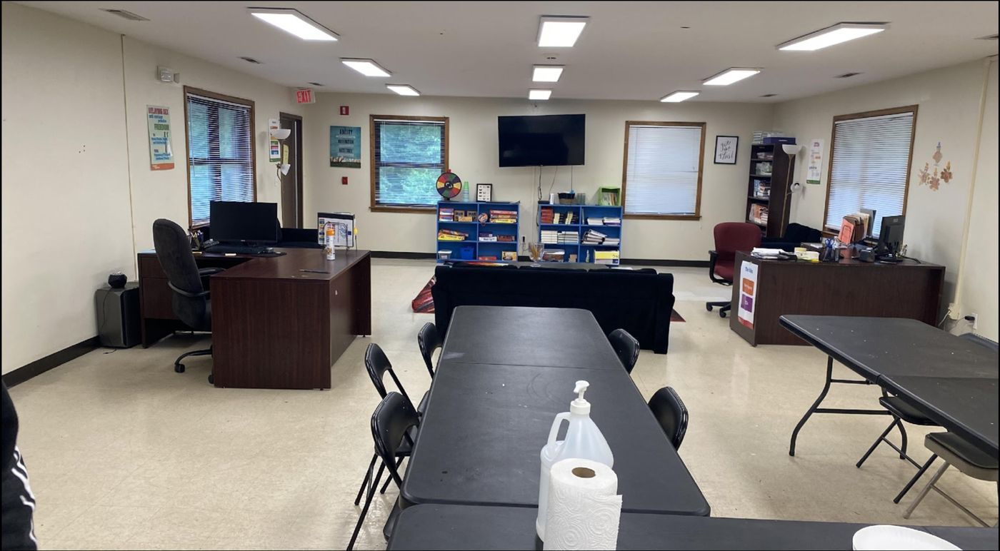
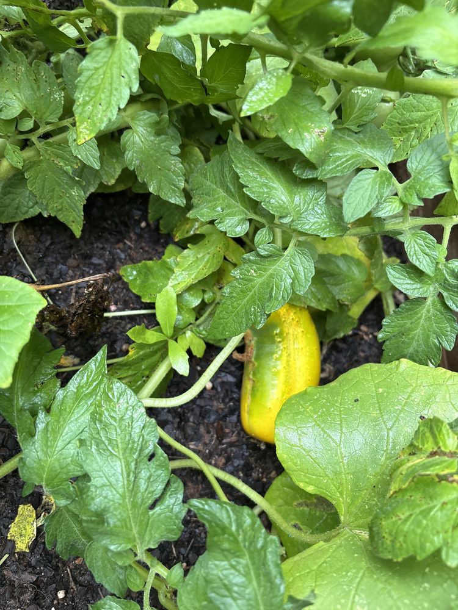
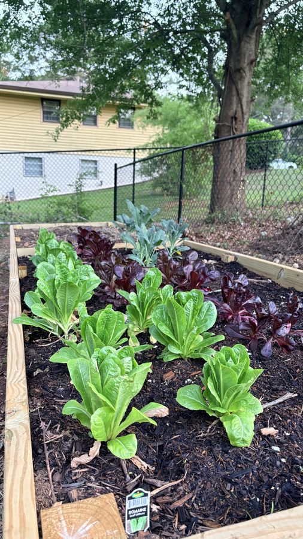

Afterschool program
Monday through Thursday, 3–7 PM, with a healthy meal each day. Roughly 30–40 students join each afternoon.
M-Pack uses positive psychology to help young people work through the effects of Adverse Childhood Experiences, through caring coaching and a steady, hands-on afterschool routine.

Impulsive behaviors are quick, unplanned reactions, often to stress. M-Pack helps students slow down and build the skills to respond differently.
Through a nine-week coaching cycle, the aim is steady growth in decision-making, conflict resolution, independent living, and social-emotional intelligence, so students can build meaningful relationships with peers and caring adults.
The key to disrupting harmful behavior patterns rooted in trauma is increased social engagement at the very moments students struggle most.
Activity categories below come from M-Pack’s program materials.
Monday through Thursday, 3–7 PM, with a healthy meal each day. Roughly 30–40 students join each afternoon.
Hands-on sessions in chess, golf, finance, public speaking, cooking, and STEM.
Certified life coaching and steady mentorship focused on emotional regulation, self-confidence, and healthy relationships.
Outings that put students in new places and in front of new ideas, with transportation provided.
Summer camp and day camps, with two meals a day during breaks.
Family-centered events such as parent sessions and family game nights.
A parent, teacher, or school counselor contacts M-Pack.
M-Pack arranges an on-site conversation, typically within three weeks of first contact.
A parent or guardian completes enrollment and shares goals for their child.
Students progress through nine-week cycles of coaching, enrichment, and field trips.
1 enrichment · 1 field trip
2 enrichments · 2 field trips
3 enrichments · 3 field trips
4 enrichments · 4 field trips
Interested in enrolling a child? Contact M-Pack
Program time is spent on real activities, away from phones and social media, with caring and trained team members.
Selected activities within 576 total hours of program operation.


The Tunnel is M-Pack’s garden project: raised beds, small greenhouses, seed starting, and harvests.
Students help prepare the beds, start seeds, water, and watch things grow, practicing patience, teamwork, and follow-through in a way they can see and taste.
Read about it in Updates
Mul-T represents an archetype of the young people M-Pack serves. He lets us share what the program is like while protecting every participant’s privacy.
Monthly gifts let M-Pack plan meals, field trips, and enrichment with confidence.